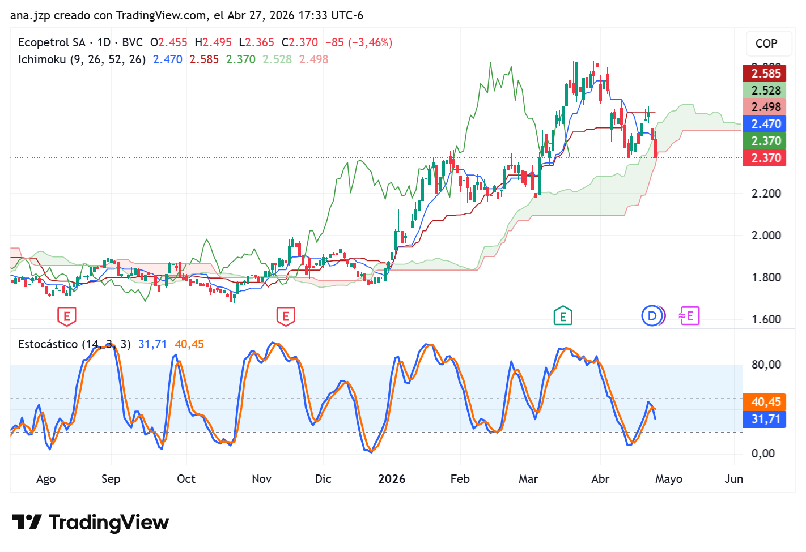
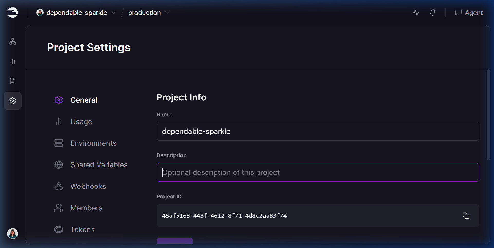
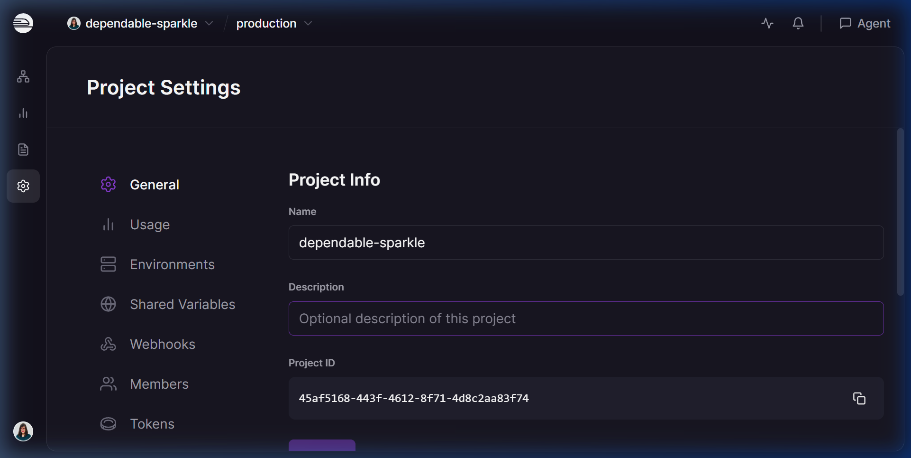
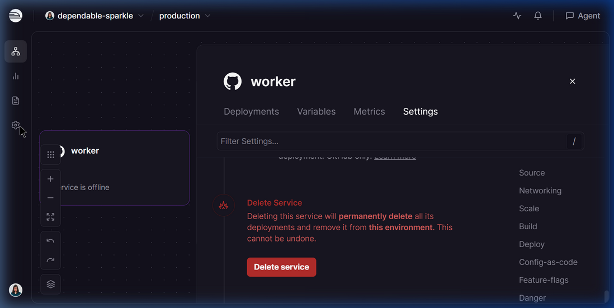

"Cali es Cali
y lo demás es ________."
Ana Lorena Jiménez Preciado
Dra. en Ciencias Económicas · Investigadora SNI
Profesora-Investigadora, Escuela Superior de Economía — Instituto Politécnico Nacional
Científica de Datos — BBVA México
XIX Congreso Internacional de Prospectiva — Cali, Colombia
💡
¿Y si un bot de $5 al mes pudiera generar señales de trading
tan buenas como un analista que cobra $5,000?
Imaginen un amigo que se ha leído TODO internet.
Le dices: "Cali es Cali y lo demás es..."
→ "loma"
Así funciona un LLM: predice la siguiente palabra más probable.
La IA no lee palabras. Lee pedacitos:
| Tú escribes | La IA ve | Tokens |
|---|---|---|
| "Ecopetrol sube" | Eco petrol sube | 3 |
| "Café colombiano" | Caf é colomb iano | 4 |
Cada token cuesta dinero. ProspecTA usa ~4,000 tokens = $0.001
La IA convierte cada palabra en un vector de coordenadas:
"café" → [0.82, -0.15, 0.47, ..., 0.31] ∈ ℝ⁷⁶⁸
"cacao" → [0.79, -0.12, 0.51, ..., 0.29] ∈ ℝ⁷⁶⁸
"Bitcoin" → [-0.41, 0.88, -0.23, ..., 0.65] ∈ ℝ⁷⁶⁸Palabras similares = vectores cercanos en el espacio:
similitud(café, cacao) = cos(θ) ≈ 0.94 ← ¡vecinos!
similitud(café, Bitcoin) = cos(θ) ≈ 0.12 ← lejos768 dimensiones. Las máquinas ven coordenadas, no letras.
Cuando la IA dice "COMPRA Ecopetrol", no es magia:
COMPRA → 72% ← más probable
NEUTRAL → 20%
VENTA → 8%
Basada en datos reales: precio, volumen, indicadores técnicos.
• Responde preguntas
• Necesita que le preguntes
• Solo texto
• Una conversación
• Toma acciones
• Decide solo qué hacer
• Conecta APIs y mercados
• Un flujo completo automatizado
El usuario toca UN botón. El agente hace TODO en 5 segundos.
5 líneas que forman una nube de soporte/resistencia:
• Tenkan-sen (9 períodos) — momentum de corto plazo
• Kijun-sen (26 períodos) — tendencia de mediano plazo
• Senkou Span A y B — forman la nube (Kumo)
▲ Precio ARRIBA de la nube → ALCISTA
▼ Precio ABAJO de la nube → BAJISTA
● Cruce Tenkan > Kijun → señal de COMPRA
Creado por Goichi Hosoda tras 30 años de investigación (1930-1960). Probado en mercados japoneses.

Arriba: Velas + Nube Ichimoku (zona sombreada) — precio entrando en la nube
Abajo: Estocástico (14,3,3) — K=31.71 y D=40.45 saliendo de zona neutral
Fuente: TradingView · Ecopetrol SA · BVC · 27 abril 2026
Mide dónde está el precio respecto a su rango reciente (14 días):
%K = (Precio - Mínimo₁₄) / (Máximo₁₄ - Mínimo₁₄) × 100K < 20 → SOBREVENTA — oportunidad de compra 🟢
K > 80 → SOBRECOMPRA — posible corrección 🔴
20-80 → zona neutral — esperar confirmación 🟡
Se complementa con %D (media móvil de %K): cuando %K cruza %D → señal de entrada.
Desarrollado por George Lane en los años 1950. Uno de los osciladores más usados en el mundo.
El mercado se mueve en 4 fases cíclicas:
ACUMULACIÓN
Los institucionales compran callados. Volumen bajo, precio lateral. Oportunidad.
MARKUP
El precio sube con fuerza. Volumen crece. El público entra. 📈
DISTRIBUCIÓN
Los institucionales venden al público. Volumen alto, precio lateral. Peligro.
CAPITULACIÓN
Venta masiva con pánico. El ciclo se reinicia. 📉
Richard Wyckoff (1873-1934). Observó a JP Morgan, Livermore y los grandes operadores de Wall Street.
📱
Abran Telegram y busquen:
@Prospecta_Cali_Bot
Toquen /start → Seleccionen un mercado
Esto que van a ver costó $0.001
Costo marginal por consulta:
C(q) = tokens × P_token = 4,000 × $0.00000025 ≈ $0.001Costo fijo mensual:
F = Servidor + API_base = $5 + $0 = $5/mesBreak-even (punto de equilibrio):
n* = F / (P - C) = $5 / ($9.99 - $0.09) ≈ 1 suscriptorMargen con n suscriptores:
π(n) = n·P − F − n·C(90) → π(10) ≈ $94/mes (94%) | π(100) ≈ $985/mesDonde P = precio suscripción, C(q) = costo variable, F = costo fijo
¿Cómo cobra un bot de Telegram sin pasarela bancaria?
• Stripe, PayPal, MercadoPago
• Requiere cuenta empresarial
• KYC, contratos, impuestos
• Comisión: 2.9% + $0.30
• Meses de setup
• Moneda digital nativa de Telegram
• Sin cuenta bancaria
• Un solo archivo de configuración
• Comisión Telegram: ~30%
• Activo en minutos
El usuario paga 250 Stars ≈ $9.99 → Telegram retiene ~30% → Desarrollador recibe ~$7.00
Aún con la comisión, el margen neto supera el 90% gracias al costo operativo de $0.001 por consulta.

1. Precio en Stars

2. Confirmación App Store

3. Confirmar y pagar ⭐ 250
Se construyó en un fin de semana. Eso es el poder de los agentes.
• Equipo de 10 personas
• $50,000 de inversión
• 6 meses de desarrollo
• 1 desarrollador
• $5 de servidor
• 1 fin de semana
Las barreras de entrada desaparecieron.
🏥 Agente de diagnóstico médico preliminar
📚 Agente tutor personalizado
🌾 Agente de monitoreo agrícola — café del Valle
🏛 Agente de análisis de licitaciones públicas
🎵 Agente de tendencias culturales — salsa caleña + datos
Cada uno puede ser un negocio de $1,000/mes
con un solo desarrollador.
"Cali es Cali y lo demás es loma."
Pero con agentes de IA,
las lomas se vuelven oportunidades.
📱 @Prospecta_Cali_Bot
3 análisis gratis. Conquisten sus lomas.
Ana Lorena Jiménez Preciado — ana.jzp@gmail.com
github.com/AnaJZP/prospecta-bot